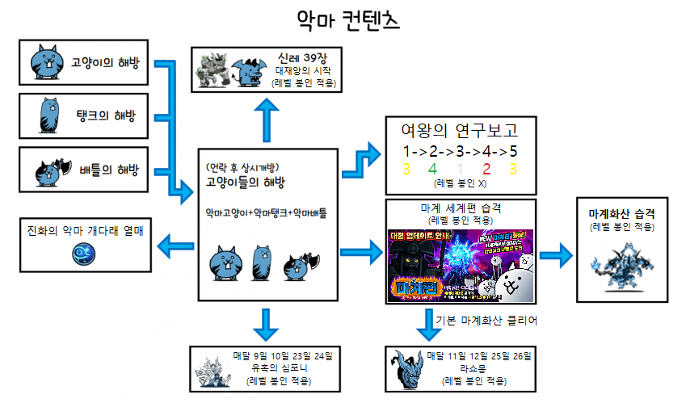

1월 30일 ~ 초회 리셋
2월 15일 ~ 초회 리셋
1월 30일 ~ 3월 9일 설날 이벤트 뽑기
2월 6일 ~ 13일 개다래 뽑기
2월 13일 ~ 20일 캣츠아이 뽑기
2월 20일 ~ 27일 개다래 뽑기
2월 27일 ~ 3월 9일 캣츠아이 뽑기
1월 30일 ~ 2월 21일 레드 바스터즈
2월 10일 ~ 13일 울트라 셀렉션 뽑기 + 미라클 셀렉션 뽑기
2월 13일 ~ 21일 울트라 하이퍼 고양이 축제 (울슈레 10%)
2월 13일 ~ 16일 기간트 제우스
2월 16일 ~ 18일 드래곤 엠퍼러스
2월 18일 ~ 21일 울트라 소울즈
이벤트
1월 30일 ~ 3월 9일 냥코의 설날
1월 30일 ~ 3월 9일 설날 해피 선물! (매일 리셋)
1월 30일 ~ 2월 12일 777 슬롯
2월 13일 ~ 3월 9일 777 슬롯 리셋
1월 30일 ~ 3월 9일 열화의 난
1월 30일 ~ 2월 13일 2025 최다 출현 적 베스트 5
1월 30일 ~ 2월 13일 2025년 추억 앨범
1월 30일 ~ 3월 9일 사이클론 페스티벌
1월 30일 ~ 3월 9일 강림제
1월 30일 ~ 3월 9일 월별 캐릭터 각성제
1월 30일 ~ 3월 9일 올스타즈 스테이지
1월 30일 ~ 3월 9일 한국판☆특별 스테이지 + 각성한 태권도 냥코의 습격!
2월 9일 ~ 18일 대역습의 메타쿠마
2월 19일 ~ 28일 대역습의 메타쿠마
3월 1일 ~ 9일 대역습의 메타쿠마
1월 30일 ~ 3월 8일 트레저 페스티벌
2월 6일 ~ 13일 울트라 고양이 눈 동굴
2월 13일 ~ 20일 XP 울트라수확축제
2월 20일 ~ 27일 울트라 고양이 눈 동굴
2월 27일 ~ 3월 9일 XP 울트라수확축제
1월 30일 ~ 3월 9일 통조림 EX 캐릭터 반값 할인
1월 30일 ~ 3월 9일 풍운 냥코탑 + 이계 냥코탑
1월 31일 ~ 2월 1일 개다래 페스티벌
2월 1일 ~ 15일 이차원 콜로세움 [낮은 코스트]
2월 9일 ~ 16일 빅펜 Z 강습
2월 13일 ~ 3월 9일 칠흑의 그림자의 전쟁
2월 13일 ~ 3월 9일 설날 세일 전쟁
2월 13일 ~ 3월 9일 설견
2월 13일 ~ 3월 9일 새해 복 강습!
2월 13일 ~ 3월 2일 파이팅! 수능대전쟁
2월 13일 ~ 28일 랭킹의 방
2월 13일 ~ 3월 9일 세뱃돈 습격!
2월 14일 ~ 15일 개다래 페스티벌
2월 16일 ~ 3월 2일 하이퍼 랭킹의 방 - 투쟁 본능 대회
2월 16일 라스트 보스 강림!? + 각성한 가왕 냥코의 습격!
2월 21일 ~ 22일 개다래 챌린지
2월 23일 ~ 3월 2일 거대 바・다레오파드 강습
2월 28일 ~ 3월 1일 개다래 페스티벌
3월 1일 ~ 15일 이차원 콜로세움 [승부수]
출석보상
1월 23일 ~ 3월 9일 설날 기념 스탬프
1월 30일 ~ 3월 9일 설날 이벤트 스탬프
2월 17일 레어 티켓 1장 (설날 기념)
3월 1일 레어 티켓 1장 (삼일절 기념)
판매
1월 30일 ~ 3월 9일 레어 티켓 & XP 판매
1월 30일 ~ 3월 9일 야옹컴 팩 판매
2월 9일 ~ 20일 땡큐땡큐 팩 + 초한정 세일
2월 20일 ~ 3월 9일 땡큐땡큐 팩 + 초한정 세일
2월 23일 ~ 3월 13일 공략 응원 팩
일판일정
뽑기
9월 15일 ~ 초회 리셋
[2월 11일 ~ 16일] アニメ「鬼滅の刃」のコラボ限定キャラが登場!!★詳細はバナーをタップ!! [확] { ちび鱗滝左近次 유닛에게 6x 확률 업 }
[2월 11일 ~ 13일] 드래곤 엠퍼러즈 [확|캠|그|지]
[2월 13일 ~ 16일] 울트라 소울즈 [확|캠|그|지]
[2월 16일 ~ 18일] 여왕 축제 [럭] <특별 드롭 확률 : 래전드 레어 = 0.6%>
[2월 16일 ~ 3월 2일] 발렌타인 뽑기 (+세뇌된 거신 고양이) [럭|플] { 발렌타인 귀요미 유닛에게 4x 확률 업 }
[2월 16일 ~ 18일] 전설의 고양이 루가족 [럭|플|캠|그|지]
[2월 16일 ~ 23일] 캣츠아이 뽑기
[2월 18일 ~ 21일] 하이퍼 고양이 축제 (+) [럭] <특별 드롭 확률 : 울슈레 = 9%>
[2월 18일 ~ 21일] 엘리멘탈 픽시즈
이벤트
[1월 30일 ~ 2월 16일] 鬼殺隊 入隊試験
[1월 30일 ~ 2월 16일] 那田蜘蛛山の戦い
[1월 30일 ~ 2월 16일] ランキングの間
[1월 30일 ~ 2월 6일] 대천사 엑스엘 강습
[1월 30일 ~ 2월 16일] XP 대수확축제 초급
[2월 1일 ~ 16일] 이차원 콜로세움
[2월 2일 ~ 16일] 特別任務！鬼化クマ先生討伐
[2월 4일 ~ 16일] 特別任務！累討伐
[2월 5일 ~ 16일] 無限列車の戦い
[2월 7일 ~ 16일] 特別任務！魘夢討伐
[2월 9일 ~ 16일] 強襲！猗窩座との戦い
[2월 9일 ~ 16일] 特別任務！猗窩座討伐
[2월 13일 ~ 20일] 그레이트 토용뭉이 강습
[2월 16일 ~ 3월 2일] XP 페스티벌
[2월 16일 ~ 3월 2일] 강습! 의리 초코 군단
[2월 16일 ~ 3월 2일] 후배에게 받은 진심 초코, 우리들의 발렌타인 전쟁
[2월 16일 ~ 3월 2일] 파이팅! 수능대전쟁
[2월 16일 ~ 3월 2일] 초극악 게릴라 경험치다냥! (화요일 / 08:00 ~ 10:00 | 목요일 / 22:00 ~ 24:00 | 금요일 / 16:00 ~ 18:00)
[2월 16일 ~ 23일] XP 대수확축제 초급, XP 대수확축제 중급, XP 대수확축제 상급, XP 울트라수확축제 초상급
[2월 16일 ~ 3월 1일] 하이퍼 랭킹의 방
[2월 16일 ~ 3월 2일] 세계편 트레져 페스티벌 (모든 짝수 날)
[2월 16일 ~ 3월 2일] 미래편 트레져 페스티벌 (모든 홀수 날)
[2월 16일 ~ 3월 2일] 우주편 트레져 페스티벌 (2일, 18일, 21일, 24일, 27일)
[2월 20일 ~ 3월 2일] 선배에게 받은 진심 초코
출석보상
[1월 30일 ~ 2월 16일] 귀멸의 칼날 콜라보 스탬프 {アニメ「鬼滅の刃」コラボイベント開催記念スタンプ}
[1월 30일 ~ 2월 21일] 特別招集！最強隊士決定戦
[1월 30일 ~ 2월 16일] 콜라보레이션 기념 팩
[2월 11일 ~ 16일] 한정 세일! 고양이 통조림 팩
[2월 11일 ~ 16일] 파워 업 세일
[2월 16일 ~ 3월 2일] 이벤트 스탬프 {バレンタインイベント開催記念☆}
[2월 16일 ~ 3월 2일] 다운로드 달성 기념 스탬프 {にゃんこ強化週間！}
[2월 16일 ~ 21일] 응원 세일! 고양이 통조림 팩
[2월 16일 ~ 3월 2일] 야옹컴 팩
판매
정규 사이클론/개다래 스테이지 일정
| 월요일 |
화요일 |
수요일 |
목요일 |
금요일 |
토요일 |
일요일 |
| 레드 사이클론 |
허리케인 사이클론 |
블랙 사이클론 |
스페이스 사이클론 |
화이트 사이클론 |
엔젤 사이클론 |
메탈 사이클론 |
| X |
언데드 사이클론 |
X |
X |
데빌 사이클론 |
고대 사이클론 |
슈퍼 스페이스 사이클론 |
| 진화의 초록 개다래 열매 |
진화의 보라 개다래 열매 |
진화의 빨강 개다래 열매 |
진화의 파랑 개다래 열매 |
진화의 노랑 개다래 열매 |
개다래 챌린지/개다래 페스티벌 |
개다래 챌린지/개다래 페스티벌 |
개다래 스테이지/이벤트 일정
개다래 챌린지
오전 8:00 ~ 9:59
오후 12:00 ~ 1:59
오후 7:00 ~ 8:59
개다래 페스티벌
한판
-초록/보라/빨강/파랑/노랑
일판
-토요일 : 초록/보라/빨강
-일요일 : 파랑/노랑
진화의 고대 개다래 열매
- 매주 월요일 : 오전 7:00 ~ 8:59
- 매주 화요일 : 오후 12:00 ~ 1:59
- 매주 수요일 : 오후 7:00 ~ 8:59
- 매주 목요일 : 오전 7:00 ~ 8:59
- 매주 금요일 : 오후 12:00 ~ 1:59
- 매주 토요일 : 오후 3:00 ~ 4:59, 오후 9:00 ~ 10:59
- 매주 일요일 : 오전 10:00 ~ 11:59, 오후 7:00 ~ 8:59
진화의 무지개 개다래 열매 (무다래 씨앗 스테이지)
진화의 악마 개다래 열매
- 매주 월요일 : 오후 12:00 ~ 1:59
- 매주 화요일 : 오후 7:00 ~ 8:59
- 매주 수요일 : 오전 7:00 ~ 8:59
- 매주 목요일 : 오전 12:00 ~ 1:59
- 매주 금요일 : 오후 7:00 ~ 8:59
- 매주 토요일 : 오전 10:00 ~ 11:59, 오후 7:00 ~ 8:59
- 매주 일요일 : 오후 3:00 ~ 4:59, 오후 9:00 ~ 10:59
광란/꼬맹이제 일정
- 꼬맹이제 (매달 23일 ~ 25일)
- 광란제 (매달 26일 ~ 28일)
대난투 일정
- 대난투 봄 스페셜 (5월 21일 ~ 5월 28일)
- 대난투 여름 스페셜 (8월 21일 ~ 8월 28일)
- 대난투 가을 스페셜 (11월 21일 ~ 11월 28일)
- 대난투 겨울 스페셜 (2월 21일 ~ 2월 28일)
악마 스테이지 일정
악마 스테이지 등장 순서 (순서대로 해야 다음 스테이지가 등장)

마법서가 가리키는 장소 + 고양이의 해방
+ 여왕의 연구보고 3 + 여왕의 발굴조사 2
- 매주 월요일 : 오전 8:00 ~ 9:59
- 매주 화요일 : 오후 12:00 ~ 1:59
- 매주 수요일 : 오후 7:00 ~ 8:59
- 매주 목요일 : 오후 10:00 ~ 11:59
- 매주 금요일 : 오전 8:00 ~ 9:59
- 매주 토요일 : 오후 12:00 ~ 1:59
- 매주 일요일 : 오후 7:00 ~ 8:59
이계의 종 + 탱크 고양이의 해방
+ 여왕의 연구보고 4 + 여왕의 발굴조사 3
- 매주 월요일 : 오후 12:00 ~ 1:59
- 매주 화요일 : 오후 7:00 ~ 8:59
- 매주 수요일 : 오후 10:00 ~ 11:59
- 매주 목요일 : 오전 8:00 ~ 9:59
- 매주 금요일 : 오후 12:00 ~ 1:59
- 매주 토요일 : 오후 7:00 ~ 8:59
- 매주 일요일 : 오후 10:00 ~ 11:59
데몬 파크 + 배틀 고양이의 해방
+ 여왕의 연구보고 1/5 + 여왕의 발굴조사 4
- 매주 월요일 : 오후 7:00 ~ 8:59
- 매주 화요일 : 오후 10:00 ~ 11:59
- 매주 수요일 : 오전 8:00 ~ 9:59
- 매주 목요일 : 오후 12:00 ~ 1:59
- 매주 금요일 : 오후 7:00 ~ 8:59
- 매주 토요일 : 오후 10:00 ~ 11:59
- 매주 일요일 : 오전 8:00 ~ 9:59
여왕의 연구보고 2 + 여왕의 발굴조사 1/5
- 매주 월요일 : 오후 10:00 ~ 11:59
- 매주 화요일 : 오전 8:00 ~ 9:59
- 매주 수요일 : 오후 12:00 ~ 1:59
- 매주 목요일 : 오후 7:00 ~ 8:59
- 매주 금요일 : 오후 10:00 ~ 11:59
- 매주 토요일 : 오전 8:00 ~ 9:59
- 매주 일요일 : 오후 12:00 ~ 1:59
이벤트 관련 정보
풍운 냥코탑

레전드 퀘스트

개다래 페스티벌

개다래 챌린지

광란제

꼬맹이제

냥코 티켓 페스티벌

가을빛 실버위크

냥코 눈꽃 축제